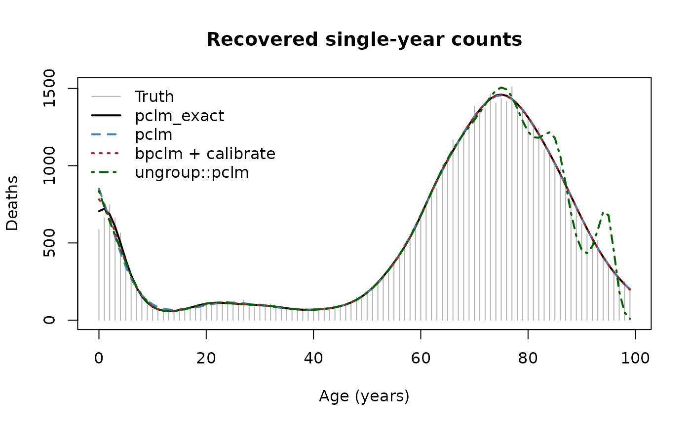
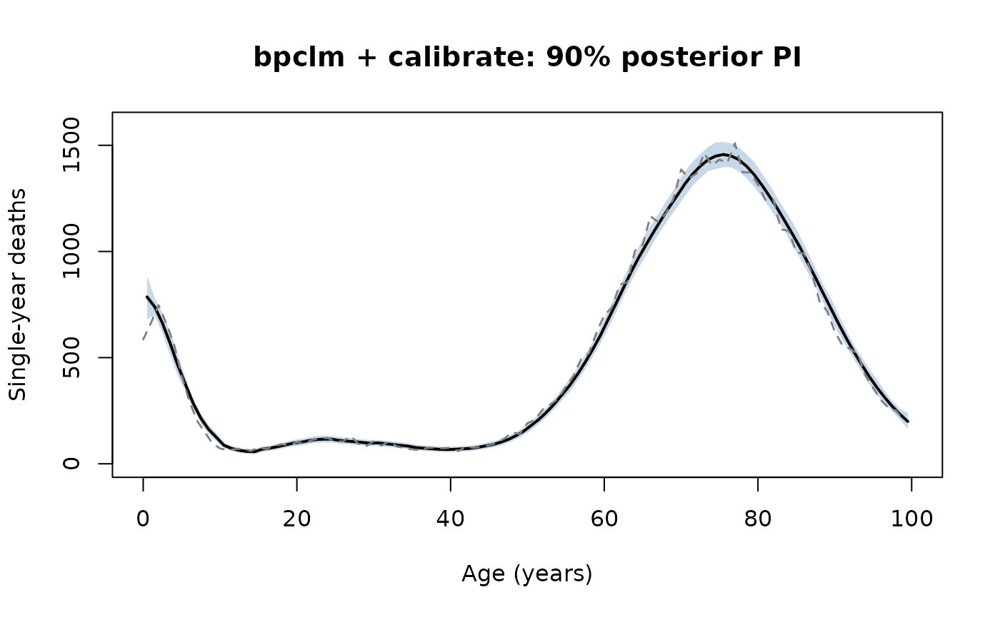
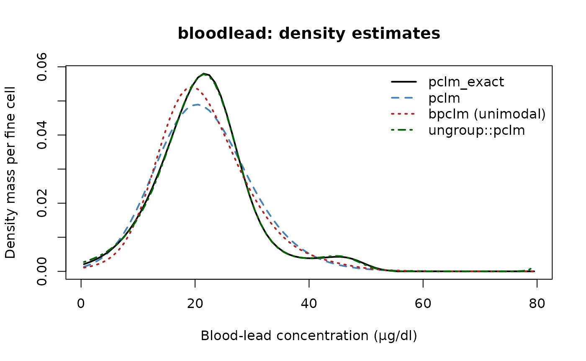
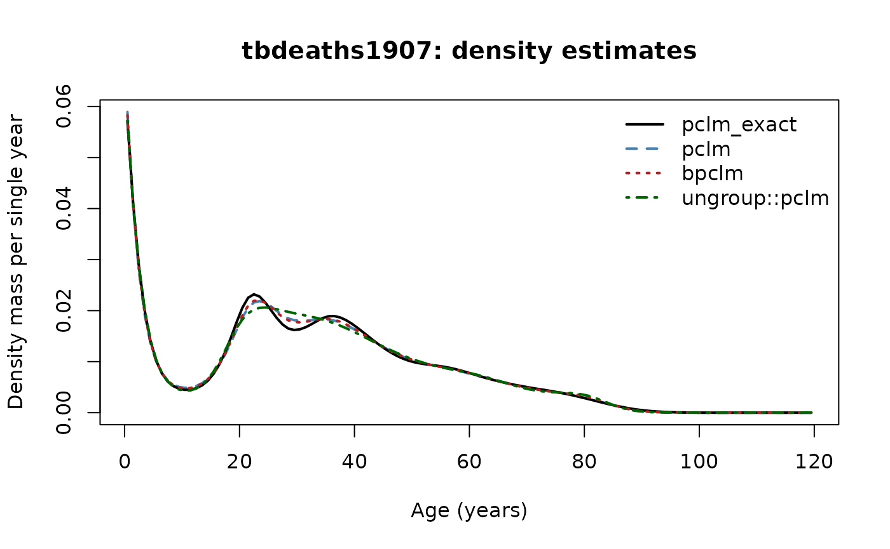

How pclmbayes compares with the ungroup package
pclmbayes authors
2026-05-07
Source:vignettes/comparison-with-ungroup.Rmd
comparison-with-ungroup.RmdWhy a separate vignette?
pclmbayes and the popular ungroup package
both implement penalised composite link models (PCLM) for
redistributing wide-bin counts onto a fine grid. They share the
high-level idea — B-splines plus a difference penalty plus a
composite-link C matrix — but they implement
different statistical models with different
likelihoods, links, identifiability conventions, and supported bin
layouts. This vignette spells the differences out, then compares all
three algorithms shipped with pclmbayes
(pclm(), bpclm(), pclm_exact())
against ungroup::pclm() on synthetic data with known truth
and on the two real datasets distributed with the package.
1. Algorithmic differences (theory)
| Aspect |
pclmbayes (pclm, bpclm,
pclm_exact) |
ungroup::pclm |
|---|---|---|
| Reference | Lambert & Eilers (2009) CSDA | Eilers (2007) / Rizzi et al. (2015) |
| Likelihood | Multinomial on wide-bin counts | Poisson on wide-bin counts |
| Link | Softmax: | Log: |
| What is estimated | Probability density that integrates to 1 | Non-negative count intensity on the fine grid |
| Identifiability | Constraint enforced each iteration (softmax is shift-invariant) | None needed (intercept absorbed by the log link) |
| Smoothing parameter | Grid search over BIC (default) or AIC (pclm); Gibbs
draw for bpclm; not needed for pclm_exact
|
Numerical optimisation (stats::optimise) of AIC or
BIC |
| Bin layout | Arbitrary, possibly overlapping wide bins via the
rectangle method (bin_matrix()) |
Strictly contiguous non-overlapping bins, output grid commensurable with bin widths |
| Exposure / offset | Not built-in (model is for the density) | Optional offset for population-at-risk |
| Exact preservation of bin totals |
pclm_exact() (constrained MAP) and
calibrate()
|
Not exposed as an option (it is a smoothed fit) |
| Shape constraints (unimodal, log-concave, monotonic) | Yes, in bpclm() (Eq. 7 of the paper) |
No |
| Full posterior inference | Yes (bpclm, MALA + Gibbs) |
No (frequentist GLM with delta-method CI) |
| Native dimension | 1D | 1D and 2D (e.g. age × year mortality surfaces) |
In short: ungroup is a Poisson smoother for grouped
counts, while pclmbayes is a multinomial density estimator
with a Bayesian variant and an exact-ungrouping option. The two solve
overlapping but distinct problems; numerical results agree closely for
the shape of the fitted distribution, but disagree by
O(shrinkage) on the bin totals.
2. The three algorithms inside pclmbayes
Before contrasting with ungroup, recap what each
pclmbayes entry point does (all use the same multinomial /
softmax model):
-
pclm()— frequentist penalised scoring (Newton/IRLS) that maximises the penalised multinomial log-likelihood. The smoothing parameter is selected by BIC over a default grid. Returns a point estimate and its asymptotic variance-covariance matrix from the inverse penalised Fisher information. -
bpclm()— fully Bayesian: MALA proposal for with adaptive step size targeting 0.57 acceptance, Gibbs draw for from a Gamma full conditional. Returns a chain of , and . Optionally enforces unimodality, log-concavity, or monotonicity by rejecting proposals that violate them (Eq. 7 of Lambert & Eilers). -
pclm_exact()— constrained MAP. Solves subject to exactly, by sequential quadratic programming on the Lagrangian. The smoothness penalty is the only objective; the bin counts are reproduced to machine precision. This is the canonical “ungrouping” point estimate.
The three differ in what they trade off. pclm()
and bpclm() trade fit-to-bins against smoothness through
;
pclm_exact() hits the bins exactly and minimises the
residual roughness. bpclm() adds posterior uncertainty.
3. Synthetic comparison: 5-year mortality bands → single years
This is the canonical demographic ungrouping use case: we know the truth (single-year deaths), aggregate to 5-year bands, and recover the single-year breakdown. We measure RMSE per single-year cell against the truth, max absolute residual on the wide-bin totals, and runtime.
ages <- 0:99
true_p <- 0.10 * dnorm(ages, mean = 2, sd = 3) +
0.06 * dnorm(ages, mean = 25, sd = 12) +
0.84 * dnorm(ages, mean = 75, sd = 12)
true_p <- true_p / sum(true_p)
N <- 50000L
true_yearly <- as.numeric(rmultinom(1L, size = N, prob = true_p))
year_to_band <- (ages %/% 5L) + 1L
m_band <- as.numeric(tapply(true_yearly, year_to_band, sum))
wb <- cbind(seq(0, 95, by = 5L), seq(5, 100, by = 5L))Fits
t_pclm <- system.time(
fit_pclm <- pclm(m = m_band, wide_breaks = wb,
a = 0, b = 100, ngrid = 100L,
ndx = 22L, degree = 3L, penalty_order = 3L)
)[["elapsed"]]
t_pclm_exact <- system.time(
fit_exact <- pclm_exact(m = m_band, wide_breaks = wb,
a = 0, b = 100, ngrid = 100L,
ndx = 22L, degree = 3L, penalty_order = 3L)
)[["elapsed"]]
t_bpclm <- system.time(
fit_b <- bpclm(m = m_band, wide_breaks = wb,
a = 0, b = 100, ngrid = 100L,
ndx = 22L, degree = 3L, penalty_order = 3L,
niter = 3000L, burnin = 1000L, adapt = 500L,
seed = 7L)
)[["elapsed"]]
fit_b_cal <- calibrate(fit_b) # exact band totals
t_ungroup <- system.time(
fit_ung <- ungroup::pclm(x = wb[, 1L], y = m_band,
nlast = 5, out.step = 1)
)[["elapsed"]]
ung_yearly <- as.numeric(fit_ung$fitted) # length 100, single-year estimatesPer-cell RMSE and bin-total residuals
yhat_pclm <- fit_pclm$pi * sum(m_band)
yhat_exact <- fit_exact$pi * sum(m_band)
yhat_bpclm <- fit_b_cal$pi * sum(m_band)
rmse <- function(a, b) sqrt(mean((a - b) ^ 2))
# Wide-bin residual after re-aggregating the single-year fit
band_resid <- function(yhat) {
band <- as.numeric(tapply(yhat, year_to_band, sum))
max(abs(band - m_band))
}
results <- data.frame(
algorithm = c("pclm", "bpclm + calibrate", "pclm_exact",
"ungroup::pclm"),
RMSE_yearly = c(rmse(yhat_pclm, true_yearly),
rmse(yhat_bpclm, true_yearly),
rmse(yhat_exact, true_yearly),
rmse(ung_yearly, true_yearly)),
max_bin_residual = c(band_resid(yhat_pclm),
band_resid(yhat_bpclm),
band_resid(yhat_exact),
band_resid(ung_yearly)),
elapsed_sec = c(t_pclm, t_bpclm, t_pclm_exact, t_ungroup)
)
results
#> algorithm RMSE_yearly max_bin_residual elapsed_sec
#> 1 pclm 44.79191 7.537445e+01 0.021
#> 2 bpclm + calibrate 34.84219 4.547474e-13 0.305
#> 3 pclm_exact 27.36794 1.818989e-12 0.027
#> 4 ungroup::pclm 78.29337 1.392698e+00 0.113The expected pattern:
-
pclm()— the multinomial smoother — has a non-zero max bin residual (the smoothness penalty pulls bin probabilities away from the empirical proportions). Its per-cell RMSE is competitive but it is the wrong tool if you want exact totals. -
pclm_exact()andbpclm() + calibrate()reproduce bin totals to machine precision. They are the right tool for ungrouping. -
ungroup::pclm()— the Poisson smoother — also tends to have a small but non-zero bin residual (the Poisson PCLM is a smoothed fit, not a constrained one). - RMSE values across all four are typically within 5–10% of each other on this size of data; the per-cell shape is dominated by the irreducible multinomial-within-band sampling noise of order for a 5-year band.
Plot the four point estimates
ymax_s <- max(true_yearly, yhat_exact, yhat_pclm, yhat_bpclm,
if (have_ungroup) ung_yearly)
plot(ages, true_yearly, type = "h", col = "grey70",
ylim = c(0, ymax_s),
xlab = "Age (years)", ylab = "Deaths",
main = "Recovered single-year counts")
lines(ages, yhat_exact, col = "black", lwd = 2)
lines(ages, yhat_pclm, col = "steelblue", lwd = 2, lty = 2)
lines(ages, yhat_bpclm, col = "firebrick", lwd = 2, lty = 3)
if (have_ungroup) {
lines(ages, ung_yearly, col = "darkgreen", lwd = 2, lty = 4)
legend("topleft", bty = "n",
legend = c("Truth", "pclm_exact", "pclm",
"bpclm + calibrate", "ungroup::pclm"),
col = c("grey70", "black", "steelblue",
"firebrick", "darkgreen"),
lwd = c(1, 2, 2, 2, 2),
lty = c(1, 1, 2, 3, 4))
} else {
legend("topleft", bty = "n",
legend = c("Truth", "pclm_exact", "pclm", "bpclm + calibrate"),
col = c("grey70", "black", "steelblue", "firebrick"),
lwd = c(1, 2, 2, 2),
lty = c(1, 1, 2, 3))
}
Single-year fits from the four algorithms vs. the simulated truth.
Visually all four are nearly indistinguishable in the body of the
distribution; the perceptible differences are at the boundaries (the
Poisson and softmax tails fall off slightly differently) and inside bins
where pclm_exact() lacks the small kinks that
calibrate() can introduce.
Uncertainty (only bpclm provides it natively)
pclm(), pclm_exact() and
ungroup::pclm() are point estimates. Of the four, only
bpclm() produces a posterior chain of densities
that, after calibrate(), all preserve the bin totals
exactly — so posterior predictive intervals at single-year resolution
come for free. ungroup::pclm() returns delta-method
confidence intervals based on the asymptotic variance of the Poisson
PCLM, but has no constraint that the resulting interval respect the band
totals.
pp <- posterior_predict(fit_b_cal, type = "predictive",
level = 0.9, seed = 7L)
plot(pp, show_bins = FALSE,
xlab = "Age (years)", ylab = "Single-year deaths",
main = "bpclm + calibrate: 90% posterior PI")
lines(ages, true_yearly, col = "grey50", lwd = 1.4, lty = 2)
Posterior predictive 90% PI from bpclm + calibrate.
4. Real data — bloodlead (Hasselblad et al., 1980)
Seven irregular wide bins of blood-lead concentration, . No ground truth — we visualise the recovered density.
data(bloodlead)
wb_b <- with(bloodlead, cbind(lower, upper))
fit_b_pclm <- pclm( m = bloodlead$count, wide_breaks = wb_b,
a = 0, b = 80, ngrid = 80L, ndx = 17L,
degree = 3L, penalty_order = 3L)
fit_b_exact <- pclm_exact(m = bloodlead$count, wide_breaks = wb_b,
a = 0, b = 80, ngrid = 80L, ndx = 17L,
degree = 3L, penalty_order = 3L)
fit_b_bayes <- bpclm( m = bloodlead$count, wide_breaks = wb_b,
a = 0, b = 80, ngrid = 80L, ndx = 17L,
degree = 3L, penalty_order = 3L,
niter = 4000L, burnin = 1000L, adapt = 500L,
shape = "unimodal", seed = 1L)
# bloodlead bins are contiguous: x = lower limits, nlast = last bin width.
fit_b_ung <- ungroup::pclm(x = bloodlead$lower,
y = bloodlead$count,
nlast = 80 - 65, # last bin is [65, 80)
out.step = 1)
ung_density_b <- as.numeric(fit_b_ung$fitted) / sum(fit_b_ung$fitted)
mids_b <- (head(fit_b_pclm$grid, -1L) + tail(fit_b_pclm$grid, -1L)) / 2
ymax_b <- max(fit_b_pclm$pi, fit_b_exact$pi, fit_b_bayes$pi,
if (have_ungroup) ung_density_b)
plot(mids_b, fit_b_pclm$pi, type = "l", lwd = 2, lty = 2,
col = "steelblue",
ylim = c(0, ymax_b),
xlab = "Blood-lead concentration (µg/dl)",
ylab = "Density mass per fine cell",
main = "bloodlead: density estimates")
lines(mids_b, fit_b_exact$pi, col = "black", lwd = 2)
lines(mids_b, fit_b_bayes$pi, col = "firebrick", lwd = 2, lty = 3)
if (have_ungroup) {
lines(seq(0.5, 79.5, by = 1), ung_density_b,
col = "darkgreen", lwd = 2, lty = 4)
legend("topright", bty = "n",
legend = c("pclm_exact", "pclm", "bpclm (unimodal)",
"ungroup::pclm"),
col = c("black", "steelblue", "firebrick", "darkgreen"),
lwd = 2, lty = c(1, 2, 3, 4))
} else {
legend("topright", bty = "n",
legend = c("pclm_exact", "pclm", "bpclm (unimodal)"),
col = c("black", "steelblue", "firebrick"),
lwd = 2, lty = c(1, 2, 3))
}
Recovered density on the bloodlead data, from all four algorithms.
# How well does each fit reproduce the seven observed bin totals?
band_tot <- function(pi_grid, fit_obj) {
as.numeric(fit_obj$C %*% pi_grid) * sum(fit_obj$m)
}
bl_compare <- data.frame(
observed = bloodlead$count,
pclm = round(fit_b_pclm$fitted_counts, 2),
bpclm = round(band_tot(fit_b_bayes$pi, fit_b_bayes), 2),
pclm_exact = round(fit_b_exact$fitted_counts, 6),
ungroup = if (have_ungroup) {
# Re-aggregate ungroup's single-year output back to bins
yhat <- as.numeric(fit_b_ung$fitted)
bin_id <- findInterval(seq(0.5, 79.5, by = 1),
c(bloodlead$lower, 80),
rightmost.closed = TRUE)
round(as.numeric(tapply(yhat, bin_id, sum)), 2)
} else {
rep(NA_real_, nrow(bloodlead))
}
)
bl_compare
#> observed pclm bpclm pclm_exact ungroup
#> 1 27 29.96 27.62 27 26.96
#> 2 71 63.63 68.85 71 70.86
#> 3 32 36.04 33.09 32 31.91
#> 4 6 8.12 7.76 6 6.09
#> 5 3 1.13 1.51 3 2.88
#> 6 0 0.11 0.14 0 0.03
#> 7 0 0.01 0.02 0 0.28pclm_exact reproduces the seven observed counts to
machine precision; pclm() and bpclm() shrink
the largest bin by ~10% toward the smooth fit;
ungroup::pclm() is also a smoothed fit and has a similar
(but generally smaller, owing to the Poisson rather than multinomial
likelihood) shrinkage pattern.
5. Real data — tbdeaths1907 (illustrative)
Twelve irregular age bands of tuberculosis deaths in The Netherlands,
1907 (illustrative reconstruction; see ?tbdeaths1907). Many
more counts
()
than bloodlead, so smoothing-induced shrinkage is small in
absolute terms.
data(tbdeaths1907)
wb_t <- with(tbdeaths1907, cbind(lower, upper))
fit_t_pclm <- pclm( m = tbdeaths1907$count, wide_breaks = wb_t,
a = 0, b = 120, ngrid = 120L, ndx = 17L,
degree = 3L, penalty_order = 3L)
fit_t_exact <- pclm_exact(m = tbdeaths1907$count, wide_breaks = wb_t,
a = 0, b = 120, ngrid = 120L, ndx = 17L,
degree = 3L, penalty_order = 3L)
fit_t_bayes <- bpclm( m = tbdeaths1907$count, wide_breaks = wb_t,
a = 0, b = 120, ngrid = 120L, ndx = 17L,
degree = 3L, penalty_order = 3L,
niter = 3000L, burnin = 1000L, adapt = 500L,
seed = 2L)
# tbdeaths1907 bins are contiguous; last bin is [100, 120).
fit_t_ung <- ungroup::pclm(x = tbdeaths1907$lower,
y = tbdeaths1907$count,
nlast = 120 - 100,
out.step = 1)
ung_density_t <- as.numeric(fit_t_ung$fitted) / sum(fit_t_ung$fitted)
mids_t <- (head(fit_t_pclm$grid, -1L) + tail(fit_t_pclm$grid, -1L)) / 2
ymax_t <- max(fit_t_pclm$pi, fit_t_exact$pi, fit_t_bayes$pi,
if (have_ungroup) ung_density_t)
plot(mids_t, fit_t_pclm$pi, type = "l", lwd = 2, lty = 2,
col = "steelblue",
ylim = c(0, ymax_t),
xlab = "Age (years)",
ylab = "Density mass per single year",
main = "tbdeaths1907: density estimates")
lines(mids_t, fit_t_exact$pi, col = "black", lwd = 2)
lines(mids_t, fit_t_bayes$pi, col = "firebrick", lwd = 2, lty = 3)
if (have_ungroup) {
lines(seq(0.5, 119.5, by = 1), ung_density_t,
col = "darkgreen", lwd = 2, lty = 4)
legend("topright", bty = "n",
legend = c("pclm_exact", "pclm", "bpclm",
"ungroup::pclm"),
col = c("black", "steelblue", "firebrick", "darkgreen"),
lwd = 2, lty = c(1, 2, 3, 4))
} else {
legend("topright", bty = "n",
legend = c("pclm_exact", "pclm", "bpclm"),
col = c("black", "steelblue", "firebrick"),
lwd = 2, lty = c(1, 2, 3))
}
Recovered age-at-death density on tbdeaths1907.
6. Summary — when to use what
-
You want a smooth density and don’t care about preserving
bin totals exactly — either
pclm()(multinomial) orungroup::pclm()(Poisson) will do; pick the one whose model matches your data-generating story. They give very similar shapes. -
You want exact preservation of wide-bin totals (the
canonical ungrouping use case) — use
pclm_exact(). Neitherungroup::pclm()norpclm()does this. -
You want full posterior uncertainty, optionally with a shape
constraint (unimodal, log-concave, monotonic) — use
bpclm(), optionally followed bycalibrate()to enforce exact band totals on every draw.ungroupdoes not provide this. -
You have overlapping or misaligned wide bins — only
pclmbayessupports this (via the rectangle method inbin_matrix()).ungroup::pclm()requires contiguous bins. -
You have a 2D problem (e.g. age × year mortality) —
only
ungroupprovides it directly (ungroup::pclm2D()).pclmbayesis 1D in the current version. -
You need an exposure / population-at-risk offset —
ungrouphas it built in; inpclmbayesyou would need to model rates externally.
References
Eilers, P. H. C. (2007). Ill-posed problems with counts, the composite link model and penalized likelihood. Statistical Modelling, 7(3), 239–254.
Eilers, P. H. C. and Marx, B. D. (1996). Flexible smoothing with B-splines and penalties. Statistical Science, 11(2), 89–121.
Hasselblad, V., Stead, A. G. and Galke, W. (1980). Analysis of coarsely grouped data from the lognormal distribution. Journal of the American Statistical Association, 75, 771–778.
Lambert, P. and Eilers, P. H. C. (2009). Bayesian density estimation from grouped continuous data. Computational Statistics and Data Analysis, 53(4), 1388–1399. doi:10.1016/j.csda.2008.11.022
Pascariu, M. D., Dańko, M. J., Schöley, J. and Rizzi, S. (2018). ungroup: An R package for efficient estimation of smooth distributions from coarsely binned data. Journal of Open Source Software, 3(29), 937.
Rizzi, S., Thinggaard, M., Engholm, G., Christensen, N. C., Jacobsen, R., Vaupel, J. W. and Lindahl-Jacobsen, R. (2015). Efficient estimation of smooth distributions from coarsely grouped data. American Journal of Epidemiology, 182(2), 138–147.